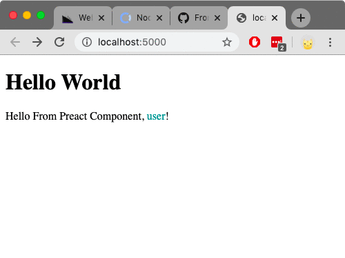
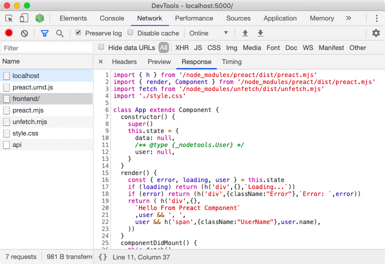
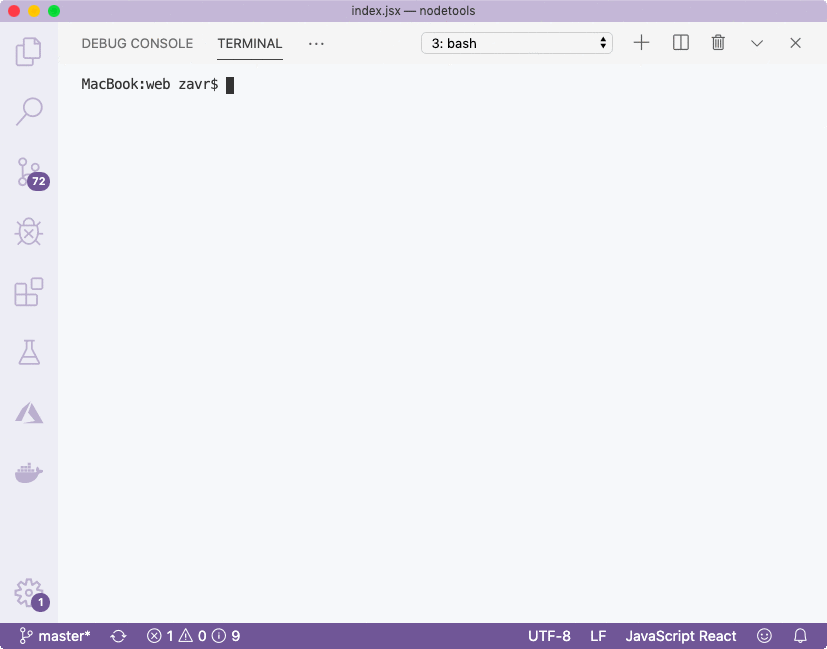
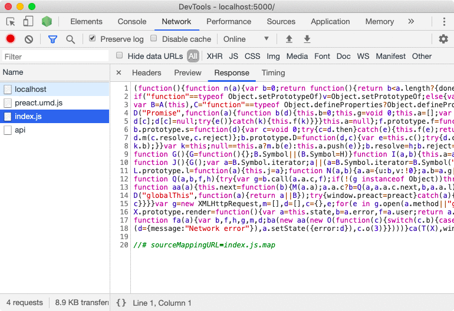

The component rendered correctly, and displayed the data received from the server. If we check the network requests, we can see how the frontend middleware has transformed the `index.jsx` file:
The imports have been updated to point to the `/node_modules/` path, rather than simple `package-name` notation. Moreover, the JSX syntax has been updated to invoke the ``h`` pragma function from _Preact_. _Preact_ is the default choice for frontend, but if you wanted to use _React_, you'd have to specify the *pragma* property in the `frontend` config. The style has been updated into a JS file that calls `__$styleInject` when imported: ```js function __$styleInject(css = '') { const head = document.head const style = document.createElement('style') style.type = 'text/css' if (style.styleSheet){ style.styleSheet.cssText = css } else { style.appendChild(document.createTextNode(css)) } head.appendChild(style) } const style = `.Error { color: red; } .UserName { color: darkcyan; }` __$styleInject(style) ```
If there were some problems with types that _Closure_ could pick up, they will be shown in the output. We saved our temp files in the `depack-temp`, so it won't be possible to jump to the error since the *temp* folder is deleted by the end of the process (we'll update _Depack_ to point to the real src in the next version). For example, the warning we get here, is that the second argument to fetch is compulsory, which is not true and it's a problem with how ``unfetch`` was annotated rather than our code. To test whether bundling was successful, we will start the server with
That's all folks we just created a simple _Preact_ application using a front-end middleware from _Idio_ and compiled it using _Closure Compiler_. We also typed both front-end and back-end with JSDoc so that we could use pure JavaScript. In addition, types that we produced, could be embedded into documentation of our package using _Documentary_ from _NodeTools_, however I'll skip talking about it here.